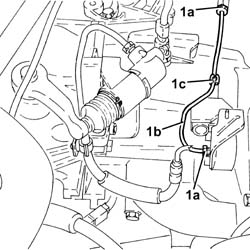
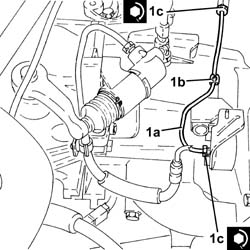

1820B51 Vibration damper RIGID inlet PIPE - R.R.
- Path
- Procedures > 18 CLUTCH > 1820 CLUTCH RELEASE CONTROLS > 1820B HYDRAULIC CLUTCH SYSTEM > 1820B51 Vibration damper RIGID inlet PIPE - R.R.
- Kind
- repair procedure (removal / refitting; the operation number is the code)
- Applies to
- engines: 1.9 JTD 16v; all production periods
- Interactive page
- https://sloeber94.github.io/elrnDB-a156/en/#/3237918
Applies to: engines: 1.9 JTD 16v; all production periods
 Removing
Removing
 Refitting
RefittingProceed with removal 5530B10 battery - r+r .
Proceed with removal 5530B52 Battery DRIP TRAY/SUPPORT - R.R. .
Remove the protective cap on the master cylinder bleed valve.
Connect the collection system (pipe and reservoir) to the bleed valve on the clutch operating cylinder.
Operate the clutch pedal until the brake/clutch reservoir is completely empty.
1. Undo the connectors (1a) and remove the vibration damper rigid inlet pipe (1b) after releasing it from the attachment (1c).

Applies to: engines: 1.9 JTD 16v; all production periods
Refitting
Removing1. Place the vibration damper rigid inlet pipe (1a) in its seating, secure it with the band (1b) and tighten the connectors (1c) to the specified torque.
 | Fastening | Component | Ø | Value (daNm) |
|---|---|---|---|---|
1c | Connector | RIGID INLET PIPE TO VIBRATION DAMPER | M12 | Intermediate connector side 1.4 ÷ 2.2 |
| Fastening | Component | Ø | Value (daNm) |
|---|---|---|---|---|
1c | Connector | RIGID INLET PIPE TO VIBRATION DAMPER | M12 | (Vibration damper side) 1.4 ÷ 2.2 |

Applies to: engines: 1.9 JTD 16v; all production periods
Bleed the air and top up the level in the hydraulic clutch system 0010T67 hydraulic clutch system bleed air .
Bleed the air from the hydraulic braking system 0010T65 hydraulic brake system bleed air .
Proceed with refitting 5530B52 Battery DRIP TRAY/SUPPORT - R.R. .
Proceed with refitting 5530B10 battery - r+r .